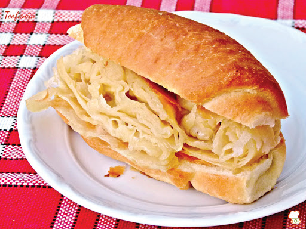
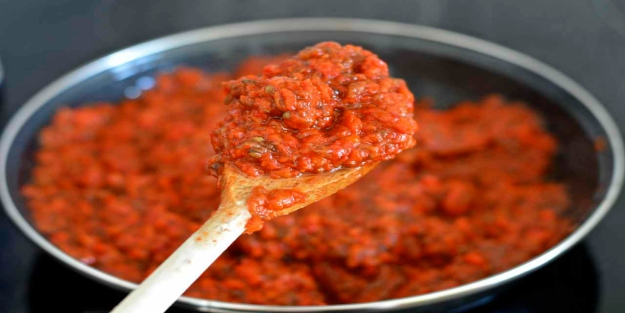
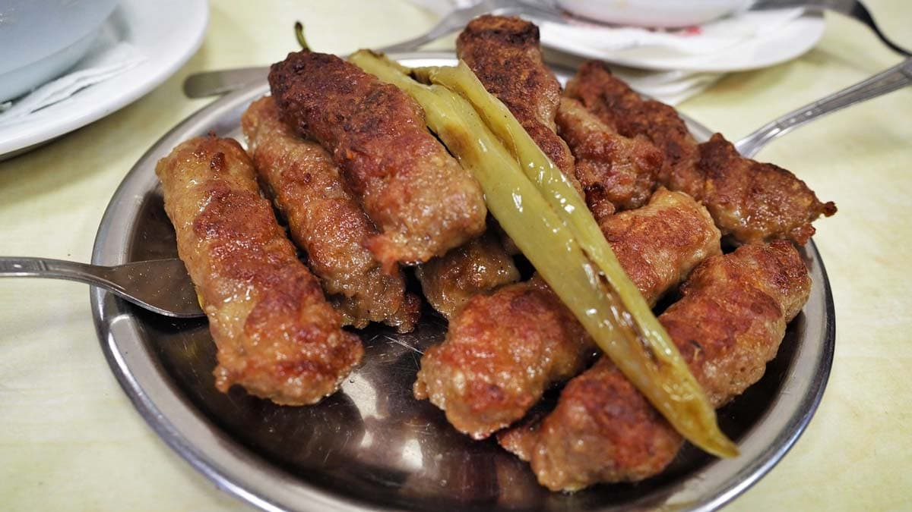
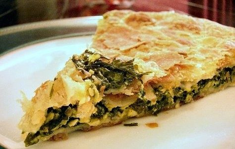
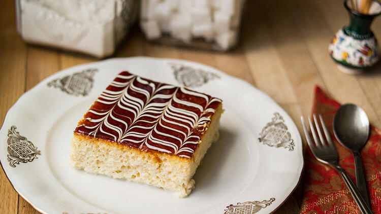

Yemekler
Üsküp te kahvaltı olarak bizde simit-poğaça yiyoruz ama Türkiye deki simit ve poğaçadan farklı olarak bizim simit-poğaça dediğimiz ekmek arası börekten oluşuyor. Kulağa saçma gelsede tadı bi hayli güzeldir.
Ayvar(ajvar), Balkan ülkelerinde çok popüler olan ve genelde evde yapılan, közlenmiş patlıcanlı, hafif acı biberli, içinde domates salçası da olan bir tür kırmızı biber ezmesidir. Salata ve turşu türüne mensup bir yemektir. Özellikle kahvaltılarda, unlu yiyeceklerin yanında yaygınlıkla kullanılır.
İnegöl köfteye benzeyen köftemiz.
Balkanların vazgeçilmezi olan börek.
Tatlı olarakta üç süt anlamına gelen trileçe